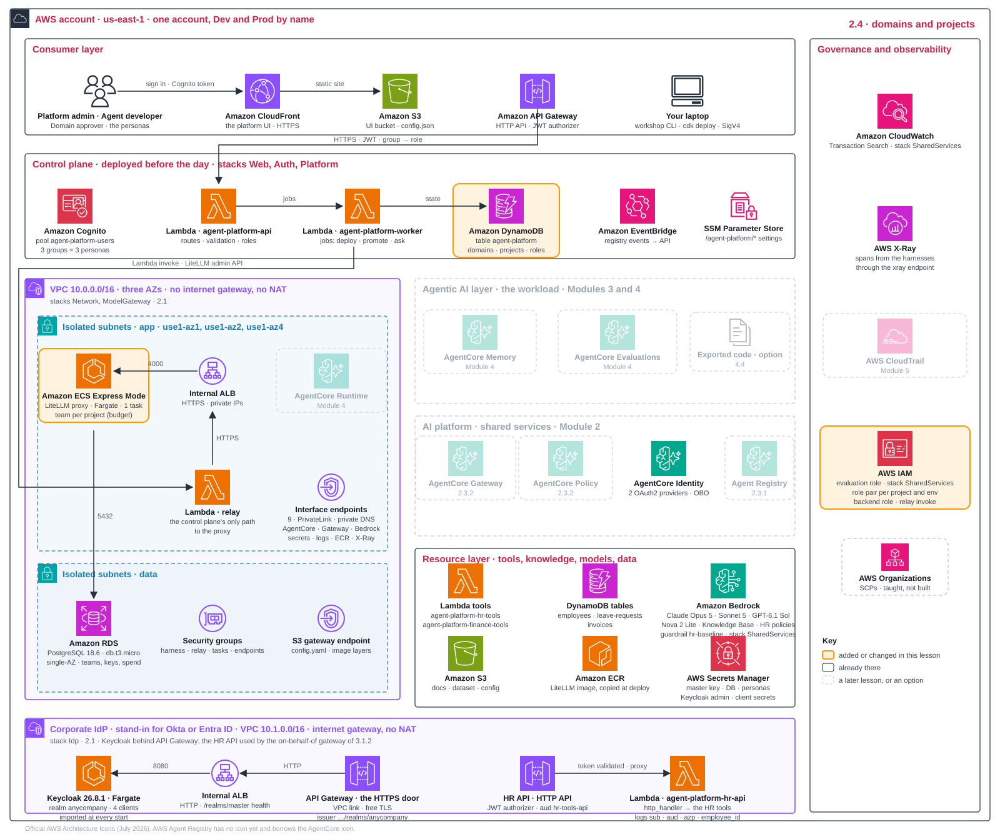

What this module builds
Module 1 ended with a reviewed design and the landing-zone stacks deploying. This module builds and reviews the shared platform that design calls for. The page follows the order in which the design decisions depend on each other, which is not always the order in which resources are provisioned: workshop apply 1 already deployed the model gateway with the landing zone, and the project fixtures are onboarded at the start because the registry and gateways need their roles. Identity comes first: verify the landing zone, then create the platform personas, the employees' corporate login and the credential stores, and prepare the two project fixtures. Every agent will call a model, so the governed model route is reviewed next. Tools need a catalogue before anyone can find them, so the registry is set up with its discovery identity, then the gateways that let callers invoke tools, with their inbound and outbound identity and policy, and then a coding assistant that discovers and invokes separately. The control-plane review then explains how all of it belongs to domains, projects and owners, and the module ends with the resulting shared platform.
| Part of the build | Decision and output | Runs |
|---|---|---|
| Foundation and identity | Private network, endpoints and shared services; three platform personas with an administrative denial; credential stores; the employees' corporate login and its credential providers; the two project fixtures | workshop apply 1, 2 and 3 |
| Model route | One justified model route with its guardrail, spend controls and processing locations; a health-checked shared model service | inspection of phase 1 output |
| Registry, gateways and coding-client access | A registry with its identity chosen before creation; whether shared tools need a centrally owned gateway, with inbound and outbound identity and policy; how a coding assistant discovers and invokes approved tools | the registry helper; workshop apply 4 as the access fixture; catalogue approval of one record |
| Control plane | Domains, projects, role pairs and budgets; administrative and direct-backend denials; what the platform creates versus registers | workshop apply 3 again, adopting |
The account, tenant and telemetry decisions come from Module 1. Workload gateways, targets, tools and the employee's delegated identity are applied in Module 3; Module 4 grants access, issues keys, evaluates and promotes.
Keep a shared-service handoff record as you build ongoing
- recordFor each shared capability on this page, name its owner, the interface another team consumes and one requirement that could change your choice.
- recordFor each interface, define one permitted request, one prohibited request and the evidence that distinguishes success from a stored configuration record. A gateway entry identifies the owner, endpoint reference, accepted caller identity, diagnostic tool, denied caller and invocation evidence; listing the gateway in a registry proves discovery only.
- recordRevisit the record each time a capability below is built. Record an unperformed check as pending.
Expected output: a handoff that a workload builder can use without guessing which resource to call, which identity to use or whether the integration has been tested. Every gap has an owner and an acceptance check.
Foundation and identity: three identity needs 10 min
Start by verifying the private landing zone you designed and deployed in Module 1, then give the platform its identities. Nothing shared can be governed until people can sign in, agents carry an execution identity of their own and credentials have a vault, so these decisions come first.
An agent platform has three identity needs:
- People: sign in and receive a token.
- Agents: authenticate with their own execution identity.
- Credentials: store the keys and tokens agents need.
A fourth question hides behind the agent: when it calls a tool for an employee, does the tool learn who that employee is, and can it verify it? This part of the module builds the corporate login that makes the answer possible; Module 3 applies it to the HR workload.
Keep these separate from the event's central Okta provisioning credential (setup): it administers an Okta organisation for the event and plays no part in persona sign-in, employee tokens or agent credentials.
Decide sign-in, secrets and the employees' login 10 min
D2.1Who signs people in?
| Option | Pros | Cons | Choose when |
|---|---|---|---|
| Cognito user pool, local users and groups | works on day one; simple | a separate user store; no single sign-on | a pilot or a workshop |
| Corporate IdP (Okta, Entra ID, Keycloak) federated into Cognito, "brokered" | single sign-on; one token issuer for every component | one more hop to configure | an enterprise with an IdP |
| The IdP as the direct issuer, no Cognito | fewer parts | every component must trust the IdP; tied to one IdP | the IdP team owns tokens end to end |
This workshop. Cognito has three groups, and the platform API maps each group to a role:
platform-admins, roleadmin: platform settings and catalogue approval.agent-developers, roledeveloper: build agents and submit releases.approvers, roleapprover: approve releases and promote them.
The three persona users are named after their roles, admin, developer and approver: that is what you type at sign-in, while the group names are what you see in the Cognito console. The API checks the token's group on every write. Only the Domain approver can approve a release; the Platform admin cannot. This is separation of duties. Groups already travel in the token, so no separate user-role attribute is needed.
These groups are the platform's own users. Employees who talk to the HR assistant never touch the platform console; they sign in at the company login, which D2.3 brings into the lab as Keycloak.
Switch persona is a workshop shortcut with two steps:
POST /me/switchsigns in the selected persona using its stored password.- The browser receives that persona's token; API group checks still apply.
Production path. Each person receives their own IdP token. The workshop lets any signed-in persona switch to any other; production must remove that shortcut. Use a corporate IdP brokered through Cognito, MFA and shorter token lifetimes.
D2.2Where do agent secrets live?
| Option | Pros | Cons | Choose when |
|---|---|---|---|
| IAM roles only | nothing to rotate | only for AWS tools | all tools are AWS resources |
| An API key in the AgentCore Identity token vault | fetched at run time; never in agent config | rotation is yours to run | non-AWS APIs, such as the model gateway |
| OAuth2 credential providers: M2M, or on behalf of a user | the standard for SaaS; user consent possible | most setup | SaaS tools, for example an HR system |
This workshop. There are two credential paths:
- Tools: IAM roles cover agent → gateway → tool; no static secret.
- Models: one key per agent, environment and model, stored as an API-key provider in AgentCore Identity. The agent fetches it at runtime.
- On-behalf-of chain: the Keycloak client secrets of hr-agent and hr-obo-gateway live in the same vault as OAuth2 credential providers,
kc-hr-agentandkc-hr-obo-gateway. AgentCore Identity uses them for the token exchange; the agent code never sees them (D3.1).
Production path. Add OAuth providers for SaaS. For an HR system, use the on-behalf-of exchange of D3.1, so the tool acts for the employee who asked; use the consent-based three-legged flow for SaaS tools that require each user's consent.
D2.3Which login do employees use, and where does it run?
| Option | Pros | Cons | Choose when |
|---|---|---|---|
| Cognito only, with the corporate IdP federated in (brokered) | one issuer for the platform and its users; no server to run | no RFC 8693: Cognito's token endpoint knows authorization code, refresh token and client credentials only, so no on-behalf-of chain | employees only need the platform UI; tools see a service identity |
| Keycloak, self-hosted | a real token exchange you can watch; every setting is yours; a realm file makes it reproducible; free | a server to run, patch and back up; in the lab one task in development mode | a lab, a pilot, or a company that already runs Keycloak |
| A SaaS identity provider (Okta, Entra ID, Auth0, PingFederate) | the company login that already exists; token exchange, MFA, lifecycle and audit included | a tenant and an administrator you rarely have in a lab account; a licence; its own vocabulary | production, almost always |
This workshop. Personas keep signing in at Cognito (D2.1). Employees get a second login, Keycloak 26.8.1, run by us: the point is a real RFC 8693 token exchange, which Cognito cannot do, and a lab account has no SaaS tenant. It has three parts:
- Task: one Fargate task in a small public VPC of its own, outside the private landing zone, where a corporate IdP always is.
- Door: an internal load balancer, exposed over HTTPS by an API Gateway HTTP API: a free certificate, no domain, a stable issuer.
- Realm:
anycompany, imported fromfoundation/keycloak/realm.jsonat every start.
The realm has four clients:
hr-portal: public, password grant; the HR portal's login. Its tokens carry the audiencehr-agent.hr-agent: confidential, token exchange on; an audience mapper lets it mint tokens forhr-obo-gateway.hr-obo-gateway: confidential, token exchange on; its mapper mints tokens forhr-tools-api.hr-tools-api: an audience only.
The audience mappers are the rule book: a token can only be exchanged by a client named in its aud, and a client can only ask for audiences its own mappers mint. Every exchanged token keeps sub and employee_id, gets a new aud, and names the asking client in azp.
Shortcut: Keycloak runs in development mode and keeps its data in the task. After a task restart the realm comes back from the file but the employee does not; run workshop apply 2 again.
Production path. Okta or Entra ID as the employees' issuer, with MFA and lifecycle owned by the identity team. The chain stays the same: the credential providers point at another discovery URL, and the audiences keep their names.
If your employees already sign in with Okta or Entra ID, that tenant replaces Keycloak as the issuer: the credential providers point at its discovery URL and the same audience rules are configured as its authorisation-server policies. The implementation ships only the Keycloak realm; an Okta variant is a design change you would qualify, not something the event's Okta provisioning token configures.
Verify the landing zone and build identity 30 min
Part 1 · Verify the landing zone
Use Get started to fetch the code, run uv sync and npm install, then check three prerequisites:
- Environment active:
source .venv/bin/activate, or.venv\Scripts\Activate.ps1in PowerShell. Otherwise, useuv run workshop …. - AWS credentials set: paste the event's credentials into your terminal.
- Account ready: run
workshop status. It lists eight stacks. The four pre-deployed ones (Web, Auth, Platform, Scenario) read CREATE_COMPLETE; the three landing-zone stacks andAgentPlatform-Idpread not deployed.AgentPlatform-Idpis the corporate identity provider (Keycloak) thatworkshop apply 2deploys in part 2 of this hands-on.
- commandConfirm
workshop apply 1has finished. It deploys three stacks: network, shared services (guardrail, tracing and evaluation role), and model gateway. After the deploy, its first section lists all eight stacks;AgentPlatform-Idpstays not deployed untilworkshop apply 2. Deployment takes about 20 minutes while the database, proxy and relay are created and the LiteLLM image is copied. - screenCloudFormation console: find the three new stacks beside the four pre-deployed stacks for the control plane and sample data.
- screenVPC console: find one VPC and six subnets, three named
appSubnetand three nameddataSubnet, with no internet gateway or NAT gateway. Both groups are isolated: each carries the tagaws-cdk:subnet-type = Isolated, and every route table holds only the local route and the S3 endpoint. Under Endpoints, find nine interface endpoints and one S3 gateway endpoint. Open one of them: its network interfaces sit in two of the three Availability Zones, not all three. Callers in the third zone reach the endpoints across zones, which works and saves a third of their cost: nine endpoints at about 0.01 USD per zone-hour each come to about 0.18 USD per hour instead of 0.27. The proxy, database and relay are the components here today; the agent harnesses join in Module 4, and the security groupagent-platform-harnessalready waits for them. - commandWhen the stacks are complete,
workshop apply 1looks at what appeared and prints four sections before the doctor. First, the eight stack rows with their CloudFormation status;AgentPlatform-Idpstill reads “not deployed” with a warning, as expected beforeworkshop apply 2. Second, the VPC with its subnets, zones and endpoint lists, and the line private posture: no internet gateway, no NAT gateway, no public IP. Third, a health call to the model gateway (GET /health/liveliness) that travels through the relay Lambda, because nothing outside the VPC can open a connection to the proxy, followed by the four approved model aliases and the guardrail bound to each. If it says the gateway “did not answer yet”, the ECS Express service needs a minute after the stack completes: wait, then runworkshop apply 1 --no-deployto repeat these checks and the doctor without redeploying. Fourth, the table of settings the platform published under/agent-platform/in SSM Parameter Store (the web UI and API URLs, the model gateway and its relay, the guardrail, the knowledge base and the HR tools Lambda); every laterworkshopcommand starts by reading this tree. - commandRead the doctor's checks at the end of
workshop apply 1. Personas marked “not created” are expected:workshop apply 2creates them in part 2. - recordCompare the four
module_1my_callentries you wrote in Module 1 with what you now see, and note anything the observed landing zone changes.
If deployment fails part-way, rerun the same command. Completed stacks are kept; deployment resumes where it stopped.
Before moving on, confirm four outcomes:
- Deployment: three landing-zone stacks complete, alongside the four pre-deployed stacks.
- Network: the expected private subnets and endpoints, with no internet path.
- Model gateway: the health call answered through the relay and the four aliases were listed.
- Design record: four
module_1choices with reasons, checked against the deployment.
Part 2 · Create the personas and the company login, then test the walls between them
- command
workshop apply 2: create three groups and users in the existing user pool. It stores their passwords, signs in as each persona and prints the API's mapped role. Still before the stack, it has the Agent developer try a Platform admin action (the 403 of step 4 below) and prints the agent role template's gateway name pattern with the namesworkshop apply 3will stamp for hr-assistant in Dev (you inspect the template with the gateway setup). It then deploys the stack AgentPlatform-Idp (Keycloak on Fargate behind API Gateway, plus the HR API that Module 3 uses), checks the realm under the headingthe realm anycompany: the imported clients and mappers, the employee E1001, creates the employee from your record (Alex Rivera, useralex.rivera, password in the users secret underemployee) and registers the two OAuth2 credential providerskc-hr-agentandkc-hr-obo-gatewayin AgentCore Identity. First run about 8 minutes, 7 of them the stack; re-runs about a minute;--no-deployskips the stack. Expected lines below. - screenThe apply output prints the Keycloak admin console address (the IdP URL plus
/admin/master/console/#/anycompany/clients). The sign-in screen asks for a username and a password: the username isadmin, Keycloak's own bootstrap administrator (not the platform'sadminpersona from the Cognito pool, whose password is different), and the password is the value of the Secrets Manager secretagent-platform/keycloak-admin. Read it in the Secrets Manager console (open the secret, Retrieve secret value, then the Plaintext tab; it is one string, not key/value pairs) or from your terminal withaws secretsmanager get-secret-value --secret-id agent-platform/keycloak-admin --query SecretString --output text. Check three things in realm anycompany: Clients lists hr-portal, hr-agent, hr-obo-gateway and hr-tools-api; hr-agent has standard token exchange on and the audience mapper aud-hr-obo-gateway in its dedicated scope; Users shows alex.rivera with employee_id = E1001. Then open the AgentCore console, Identity, OAuth clients: kc-hr-agent and kc-hr-obo-gateway with the realm's discovery URL. - screenUse
uv run python scripts/doctor.py --show-passwordsto see the passwords (three personas and the employee). Sign in once, then use Switch persona (top-right user menu) to try all three roles. - screenAs Agent developer, Create domain and Governance are hidden. The apply command also tests the API: developer
POST /domainsreturns 403 FORBIDDEN. Module 4 shows the release-approval restriction. - recordWrite
my_callfor the threemodule_2decisions of this part (people,secrets,corporate_idp) indesign-record.yaml.
# workshop apply 2: the realm as Keycloak imported it, the employee, the two credential providers (lines shortened)
client hr-portal public, direct access grants -> aud ['hr-agent']
client hr-agent confidential, token exchange -> aud ['hr-obo-gateway']
client hr-obo-gateway confidential, token exchange -> aud ['hr-tools-api']
client hr-tools-api confidential (audience only)
user alex.rivera (E1001, Alex Rivera): password in the users secret under `employee`
kc-hr-agent client hr-agent TOKEN_EXCHANGE, actor token NONE
kc-hr-obo-gateway client hr-obo-gateway TOKEN_EXCHANGE, actor token NONEDo not copy the output of scripts/doctor.py --show-passwords or the Keycloak admin password into evidence. If a step fails, rerun uv run workshop apply 2: re-runs take about a minute and adopt what exists; --no-deploy skips the stack. If Keycloak's task has restarted, the realm returns from its file but the employee does not, and the same rerun restores it.
Before moving on, confirm three outcomes: the developer persona is refused POST /domains with HTTP 403; realm anycompany has its four clients and alex.rivera with employee_id = E1001; AgentCore Identity lists kc-hr-agent and kc-hr-obo-gateway. The first exchange of the employee's token runs in Module 3.
Part 3 · Prepare the project fixtures
- recordChoose the domain, project, owner, models, model and budget now and set them in
module_3.inputsofdesign-record.yaml(the defaults build the reference platform), then runworkshop record: it prints the effective inputs with the defaults filled in for anything you left out, or the list of problems, and needs no AWS access. Everyworkshopcommand runs the same check first, so a bad value stopsapply 3before anything is built: the domain and project ids must be kebab-case (hr-assistant),modelmust be one ofmodels, the budget numbers must be positive and its period a duration such as7d, and the Finance namesfinance-opsandinvoice-helperare reserved. - recordTreat the domain and project ids as permanent from here: the registry, the gateways and every later module create resources named after them. A later rerun of
apply 3adds models (and tools or knowledge) newly listed in the record to the existing project, but never renames it, removes a model or changes its budget; a different id would onboard a second project. The control plane section explains every input and output. - command
uv run workshop apply 3(well under a minute; a new role can add up to a minute for IAM): it creates the domainspeople-opsandfinance-ops, the projectshr-assistantandinvoice-helperwith four IAM roles and a model-gateway team each, then proves the HR Dev agent role reaches neither tool Lambda directly (twoAccessDeniedExceptionlines and anOK). The registry and gateway setup below need these roles; the control plane section reruns the command, which adopts what exists, and explains every line.
Read more: brokered or direct identity; AgentCore Identity guide; RFC 8693; MCP security best practices (why passthrough is forbidden); Keycloak token exchange.
Your design record: module_2
module_2:
inputs: # read by: workshop apply 2 and workshop obo
employee: E1001 # the employee who signs in at the corporate IdP; the on-behalf-of chain acts for this person
decisions:
people: {workshop: cognito-groups, my_call: "..."} # three groups are the three personas
agents: {workshop: iam-sigv4, my_call: "..."} # one role pair per project and environment
secrets: {workshop: token-vault, my_call: "..."} # one key per agent, environment, model
corporate_idp: {workshop: keycloak-self-hosted, my_call: "..."} # one realm on Fargate, HTTPS through API Gateway; Okta or Entra in production
user_identity: {workshop: obo-token-exchange, my_call: "..."} # RFC 8693 at each hop, brokered by AgentCore IdentityBold keys are apply inputs. The employee is the one input of this block: any id from scenario/data/employees.json works, and the examples in this section assume the default, E1001, Alex Rivera.
This part writes people, secrets and corporate_idp; agents is written with the gateway identity decisions and user_identity in Module 3.
Before moving on to the model route, record the package revision, account and Region, the network checks, the persona denial, the realm clients, the provider names and the SSM parameter tree /agent-platform/ that later commands read. Reconcile resource tags and security controls against your own requirements before claiming production readiness; the reference network and identity configuration alone does not prove compliance with every requirement.
Model route: one door for every model 10 min
With identities in place, the next shared service is the route to models, because every agent built later calls one. Decide how agents reach models, which route this workshop selects, how spend is controlled and where requests may be processed, then health-check the shared model service that workshop apply 1 deployed.
A model gateway sits between agents and models. It provides five controls:
- Access: approved model aliases.
- Rate: tokens and requests per minute.
- Spend: budgets and caps.
- Safety: a guardrail on every model call.
- Attribution: cost recorded per key.
Before comparing products, separate four things a route decision must name. A provider name or a gateway product name alone is not a complete decision.
| Field | Example and implication |
|---|---|
| Model family and version | Claude is a model family. Choosing it does not decide whether requests go through AWS or directly to the model provider |
| Upstream service and endpoint | Amazon Bedrock, the Anthropic API or another approved service processes the request, each with its own credentials, processing locations and terms. Even two Bedrock endpoints differ: cross-Region inference profiles and native Guardrails are documented for bedrock-runtime, not for bedrock-mantle, which also uses different IAM actions (bedrock-mantle:CreateInference rather than bedrock:InvokeModel) |
| Client API | Converse, Messages, Chat Completions or Responses define request and response behaviour. An OpenAI-compatible API can serve a model hosted in Bedrock; changing a base URL does not turn a Converse client into a Chat Completions client |
| Enforcement point | Application authorisation, IAM, gateway policy, content controls and budgets act at different points. Name the control that actually rejects a forbidden request |
Decide the model route, spend control and processing location 15 min
D2.4How do agents reach models?
| Option | Pros | Cons | Choose when |
|---|---|---|---|
| A · Direct Bedrock with an IAM allow-list; an application inference profile adds cost tags per project | no extra component; cost allocation by tag | no dollar caps: the profile attributes spend, it does not limit it | one team, trusted developers; add the profile when attribution is the goal |
| B · Gateway inference targets: AgentCore Gateway's built-in LLM gateway | managed; OpenAI- and Anthropic-compatible APIs; token rate limits; one endpoint that routes to Bedrock, OpenAI or Anthropic models | no dollar budgets; rate limits fail open by default; guardrails only as policy conditions (content filter, prompt attack, sensitive information), not a full Bedrock Guardrail attached per call | rate limits suffice |
| C · A model gateway product (LiteLLM, this workshop) | teams and keys; dollar caps with resets; spend logs; a guardrail per alias | one more service to run, about 0.1 USD per hour here; a master key to protect | hard budgets per team and agent; a self-hosted product when model traffic must stay inside your VPC |
Option C is a product category rather than one product. Self-hosted gateways such as LiteLLM, used here, or Portkey's open-source gateway run inside your VPC and keep model traffic on the private path of D1.5; hosted routers such as OpenRouter or Portkey's hosted service can reach Bedrock, but they do so from outside your account over the public internet, so they do not fit an endpoints-only network. Anthropic's Claude apps gateway is the same idea for developer tooling: it sits between developers' Claude Code clients and the model provider, and has no service-token flow for unattended workloads, so it is not a path for agents.
This workshop. LiteLLM runs on ECS Express Mode with RDS for keys and spend records. Its four approved aliases, from three vendors (Anthropic, OpenAI and Amazon), inherit the baseline guardrail; the HR project's team may use two of them, claude-sonnet-5 and gpt-6-1-sol, and its Dev key one.
LiteLLM is a proxy server: it receives each model request and passes it on to Bedrock. Model gateway, LiteLLM and proxy therefore name one service. The proxy is private and has two access paths:
- Agents in the VPC: reach its internal load balancer directly.
- Control plane, CLI and laptop: use an IAM-authorised Lambda relay. Admin calls also require the master key.
Guardrail placement: at each alias, rather than per agent, account or tool policy. Every call names an alias, so agents inherit the filter. The browser cannot reach LiteLLM's private /ui; Governance shows its URL and credentials.
Production path. Use one gateway per environment, Multi-AZ, scoped admin keys and domain-specific guardrails.
Reference · Gateway inference targets and Claude Apps Gateway in more detail
AgentCore Gateway inference targets (option B). Clients authenticate to the gateway; the gateway separately authenticates to the model provider. A connector target (documented ids include bedrock-mantle, openai and anthropic) handles model discovery, id handling and path rewriting; a provider target makes you own the HTTPS endpoint, model and operation list, path rewriting and compatibility tests. OpenAI SDK clients use a base URL ending /inference/v1; an Anthropic client adds /v1/messages itself, so its base URL ends /inference. With AWS_IAM inbound authorisation the client must sign requests; a placeholder SDK API key is not enough. Model-based routing alone does not establish fallback; prefer target-qualified model ids when targets overlap. Inference targets and MCP tool targets are different configurations and request paths. Record and test any guardrail or policy conditions you configure on inference traffic; they are distinct from native features of the upstream endpoint.
Claude Apps Gateway (developer tooling only). It serves Claude Code developers: corporate OIDC sign-in, group and model rules, managed client settings and per-developer spend limits, in front of Bedrock or the Anthropic API. A group or organisation cap is a per-developer default, not a shared pool; after the cap the next request receives 429 with a billing_error; when its database cannot be queried, spend enforcement fails open by default unless enforcement.fail_closed_on_error: true is set. One OIDC issuer per instance; the operator runs PostgreSQL, TLS, private reachability and upgrades. It has no service-token flow for unattended agents, so it is a comparison for the coding-assistant consumer below, not a route for workloads.
D2.5How is spend controlled?
| Option | Pros | Cons | Choose when |
|---|---|---|---|
| Hard caps with automatic reset | enforceable | an agent can be stopped mid-task | budgets are real limits |
| Quotas and rate limits | protects capacity | not money | throttling is the goal |
| Alerts only | cheapest; no agent is ever blocked | spend can run away | low risk, mature teams |
This workshop. Spend has two enforced levels:
- Project team: 5 USD / 7 days, plus project-wide rate limits.
- Agent key: 1 USD / 7 days, per agent, environment and model.
At the cap, calls return BUDGET_EXCEEDED; admin can raise it in Keys. Caps follow agent keys, not users. Seven-day periods avoid a midnight UTC daily reset during the event.
Keep three numbers separate:
- Declared: a planning allocation in the blueprint.
- Measured: usage recorded in spend logs.
- Enforced: dollar caps and rate limits that block calls.
Production path. Alert before caps are reached. Add per-user enforcement with LiteLLM Enterprise where needed; AWS Budgets by tag provides alerts, not model-call caps.
| If the budget store is down | Pros | Cons | Choose when |
|---|---|---|---|
| Fail open: calls pass, unmetered | agents keep working | spend uncounted until recovery; the cap was advice for that interval | availability outranks the budget; alerts cover the gap |
| Fail closed: calls stop | the cap is a real limit | an outage of the door stops every agent | the budget is a hard boundary: regulated spend, pay-per-use tenants |
Outage behaviour must be chosen and tested:
- LiteLLM: default fail closed on database loss, except cached keys;
allow_requests_on_db_unavailablechanges this. - AgentCore Gateway: rate limits fail open.
- Claude apps gateway: developer-tool gateway; default fail open, with a fail-closed option.
The workshop uses LiteLLM's default. Database-outage behaviour is not tested here.
D2.6Where may a model request be processed?
us. profiles; all possible destinations need permission.| Option | Pros | Cons | Choose when |
|---|---|---|---|
| Regional: the model id without a profile | processed in the Region that received the call | one Region's capacity; some models exist only behind a profile | processing must stay in one Region |
Geographic cross-Region profile: us., eu., apac. | more capacity; stays inside the geography | a geography is not a country; every destination Region must be allowed by IAM and by the SCPs | residency by geography |
Global cross-Region profile: global. | the most capacity; about 10 % cheaper than geographic | any commercial Region may process the request; a Region-deny SCP must learn unspecified | no residency requirement |
This workshop. All four aliases map to us. profiles. Calls enter us-east-1 and may run elsewhere in the US geography. Other platform resources stay in one Region.
Routing follows three rules:
- Platform choice: the alias map sets the route; agents choose aliases, not Regions.
- Permission: a denied destination fails the request. An SCP does not narrow the route.
- Fallback: preserve tool-call support and permitted processing Regions. A fallback cannot bypass a denial.
Production path. Define processing locations per data class. Use bedrock:InferenceProfileArn for SCP profile exceptions. An alias names a route; CloudTrail's inferenceRegion proves where processing occurred.
Reference · Inference profiles, IAM and SCPs, with a worked example
Geographic profiles. Use GetInferenceProfile and the supported-Region documentation to list every destination. IAM must cover the profile and the foundation model in the source Region and in every candidate destination. A destination denied by an effective SCP can fail the request; a Region deny does not trim the profile into a smaller pool. With the security owner, compare allowing all destination Regions with a narrow exception for approved profile ARNs using bedrock:InferenceProfileArn: that key is present when the foundation model is authorised, absent when the profile resource itself is authorised, and the originating request must still pass the source-Region restriction.
Global profiles. Authorisation covers the source-Region profile, the source-Region foundation model and the Region-agnostic global foundation model, for which aws:RequestedRegion is unspecified. Allowing only the source Region is insufficient, and denying one destination does not create a geographically restricted global profile. Use the documented approved-profile exception or an explicit global deny; never broadly allow unspecified to work around an unexplained failure.
Evidence. For an executed request, keep its reference and CloudTrail's additionalEventData.inferenceRegion from the source Region. Account Region enablement and the endpoint called are not evidence of processing location, and one successful request does not prove every possible destination is approved.
Worked example. A design permits US processing, calls us-east-1 and selects a geographic profile listing us-east-1, us-east-2 and us-west-2. The effective Region-deny SCP permits only the first two and has no profile exception. The decision is pending policy approval: the profile still includes us-west-2. The security owner can review a narrow profile exception, or the team can choose another route. Switching to a global profile would violate the US-only requirement.
The selected route and its operating responsibilities
This workshop's route is option C: the LiteLLM proxy deployed by workshop apply 1, private behind an internal load balancer, with RDS for keys and spend, the hr-baseline guardrail on every alias, and model calls only through it (agent roles have no bedrock:InvokeModel). Operating a proxy is justified here by hard dollar caps per team and per key and by keeping model traffic inside the VPC; if direct Bedrock met the requirement, the proxy would add components without resolving a gap.
| Responsibility | What the operator owns |
|---|---|
| Service | The proxy and its version pin, PostgreSQL for virtual keys and persistent spend and budget checks, any shared cache a replicated deployment needs, TLS and private access, capacity, backups, upgrades and incident response |
| Identity | The master key (admin calls only, behind the IAM-authorised relay); one virtual key per agent, environment and model, mapped server-side from a verified project, never from a caller-supplied tenant label |
| Upstream | The alias map: each alias names a route, not a physical provider or Region. An external fallback has its own identity, processing and retention rules |
Fallback must preserve tool-call support and the permitted processing locations, and cannot turn a denied request into an allowed one. Write the expected result for each case before relying on it; the workshop does not configure fallbacks or test them:
| Case | Expected result and evidence |
|---|---|
| Healthy primary | The request uses the primary's approved upstream; usage correlates to the calling key |
| Primary throttled or unavailable | Only a configured approved fallback is used; telemetry shows the failure and the selected route |
| Primary denied by an access or residency rule | The denial stands; no fallback |
| Wrong project or unapproved model | Refused at the proxy (the key is restricted to its model); a forged tenant label changes nothing |
| Budget reached, including concurrent requests | The configured enforcement is demonstrated; estimated spend is reconciled with billing |
| Database unavailable, then restored | Behaviour matches the chosen failure policy; any unmetered interval is recorded and recovery verified |
The access and cost contract each project receives is set in two later places: the project team's allowed models, budget and rate limits at the control plane (module_3.inputs: models, model, budget), and each agent key's cap in Module 4 (module_5.inputs.key_cap), where key issuance, the guardrail and wrong-model probes, a low-cap refusal and restoration run.
Health-check the model route 10 min
- command
uv run workshop apply 1 --no-deployrepeats the landing-zone checks and the doctor without deploying. Read its third section: the health call (GET /health/liveliness) answered through the relay Lambda, then the four approved aliasesclaude-opus-5,claude-sonnet-5,gpt-6-1-solandnova-2-lite, each bound to the guardrailhr-baseline. If it says the gateway did not answer yet, wait a minute and repeat. - screenAs Platform admin, open Governance and find the model gateway: reachability Private · reachable only from inside the VPC, the OpenAI-compatible base URL, the admin UI address (not reachable from a browser, because the proxy is private; the platform reaches it through the relay) and the username
adminwith a masked password, which is the master key. Do not reveal or copy it. The route that returns it,GET /governance/model-gateway/credentials, answers only the admin persona. - recordFor the selected route, record the source Region (
us-east-1), the alias-to-profile mapping (us.geographic profiles), every possible destination Region, the guardrail per alias, who holds the master key, who may issue a project key, the team budget and the key cap you will set. - recordWrite
my_callformodule_5.decisions.model_access,spend_controlandprocessing_location.
A model listed in the console proves availability only. The first governed call, its guardrail stop, the wrong-model refusal and the budget refusal are executed in Module 4 with a real key. Keep tools and models distinct: tool policy controls operations and arguments; model access controls which models run, with which safety controls and spending limits.
Read more: Guardrails enforcement; Gateway inference targets; cross-Region inference.
Registry, gateways and access: three permissions 5 min
Models now have one governed door. Tools need more than a door: before anyone builds another tool they should be able to find an approved one, and finding it must not be the same as being allowed to call it. Discovery, publication and invocation are three different permissions, and the next three parts set them up in order: the registry and its identity, the gateways with their inbound and outbound identity and policy, then a consumer that uses both.
Before building another tool, a developer should be able to find an approved one, see its owner and version and learn how to connect. A registry supplies that inventory and discovery contract. Gateways, runtimes and the underlying services execute requests and enforce invocation.
| Permission | Question | Where it is set up |
|---|---|---|
| Discover | Who may search, list and read records, and through which interface? | Registry setup: the registry's discovery authorisation, fixed at creation, and its sharing |
| Publish and approve | Who may create, submit, approve and deprecate records? | Registry setup: always IAM; publishers and curators separate from readers |
| Invoke | Who may call the tool a record points at, as whom? | Gateway setup: the gateway's inbound and outbound identity and its policy; workload gateways in Module 3 |
The coding-client access then puts the three together for one consumer, a coding assistant in the developer's editor. A search match never confers invocation, and an approval label never grants access.
What runs where
- The registry setup creates the registry with the same helper that
workshop apply 4runs first; phase 4 adopts it instead of creating another. You check its readiness, discovery type and who may approve. - The gateway setup decides the shared gateway and builds the access fixture. The decision about a shared platform gateway or domain gateways is a design exercise, because no command deploys those layouts. The fixture is
workshop apply 4: the workload gateways (one per project and environment) of the two projects onboarded with the foundation fixtures, their targets, the shared policy engine in LOG_ONLY and three catalogue records waiting for approval. - The coding-client access consumes it. You approve only the HR tools record, discover it as a reader, invoke it with an authorised role and are refused with another project's role, all from the editor terminal. Connecting a native IDE MCP client stays a bounded design exercise until a signing adapter or a JWT registry exists.
Module 3 then examines the workload side of the same tool plane (targets, knowledge filter, policy rollout, the employee's token), and Module 4 approves the remaining records.
Registry setup: what a catalogue must establish 5 min
Start with the registry, because the gateway records and every consumer point at it. Choose its scope and discovery identity before you create it, since the identity cannot change later; separate publishers and curators from readers; then create it and verify who may read and who may approve.
| Capability | What it lets people do | Boundary to preserve |
|---|---|---|
| Inventory and ownership | Describe agents, MCP servers and their tools, skills and custom resources with owner, purpose, version, protocol, provenance and support contact | Resources may be hosted on AgentCore or elsewhere; metadata is not proof of a working endpoint |
| Publication and curation | Submit a record, have a curator approve its revision, withdraw an obsolete offering | Approved discovery and the administrative inventory are different views; auto-approval is an explicit policy choice |
| Discovery and reuse | Search by capability, browse approved records, retrieve details through the API or the registry's MCP endpoint | Relevance does not establish compatibility or permission to invoke |
| Synchronisation | Refresh descriptors from supported endpoints, or auto-detect supported Runtimes and Gateways across an organisation | Detection does not approve; review changed revisions |
| Access and audit | Select IAM or JWT discovery, scope publisher and curator roles, connect lifecycle events to operating processes | Change events need handlers; CloudTrail data events for discovery and MCP must be enabled explicitly |
Native descriptors capture protocol details: an MCP server record carries its tool definitions; an agent may use an A2A card; a skill can carry discovery metadata and SKILL.md. The registry does not store the rest of a skill bundle or verify its package; consumers still need a reviewed artefact, a compatible loader and separate authorisation.
One record moves through these states. A consumer sees only approved revisions:
| Change | Publisher and curator view | Consumer discovery view |
|---|---|---|
| Create revision A | DRAFT | absent |
| Submit A | PENDING_APPROVAL | absent |
| Curator approves A | APPROVED | A becomes discoverable, subject to search-index propagation |
| Edit the description, creating B | latest revision DRAFT B | approved A remains discoverable |
| Curator approves B | APPROVED B | discovery moves to B |
| Deprecate the record | DEPRECATED, terminal | withdrawn; already configured clients still need endpoint-side revocation |
Decide where the catalogue lives and how many registries 10 min
D2.7Where does the catalogue live?
| Option | Pros | Cons | Choose when |
|---|---|---|---|
| The platform's own database | simple | custom API needed for external discovery | one platform |
| AWS Agent Registry: records, approval states, events | shared across accounts and tools; an event on every state change | a new service to learn | sharing beyond one platform |
This workshop. Admin approves the three Agent Registry records. Every persona can read them; invoking a tool still requires the project's allow-list and gateway permissions.
Approval is a visible label today. It does not block deployment or invocation.
Production path. Allow deployment only with approved references. The record's domain owner approves.
D2.8The catalogue: who may find it, who may change it, and how many registries?
| Option | Pros | Cons | Choose when |
|---|---|---|---|
| One registry in the platform account | simple; one approval queue | this account's records only; sharing is manual; every reader sees every approved record's name and endpoint | one platform, one account |
| One organization-scoped registry, shared across accounts | auto-detects the supported Runtimes and Gateways in the member accounts; one inventory; shared by RAM with a persona permission | one per organisation per Region; a delegated administrator (recommended) to own it; detection is not approval; record-owner conditions do not cover search and list, so only a share without those two actions hides other accounts' records | many accounts, central curation |
| A registry per tenant, plus a merged view | private metadata; a tenant's own IdP, key and offboarding | five registries per account per Region by default; search reads one registry per call, so a merged view is your code; auth type, JWT URL and key are fixed at creation | private metadata, or contractual isolation |
This workshop. The registry setup creates one AWS Agent Registry with the helper that workshop apply 4 later adopts. Admin approves records; every persona reads them through the platform. D2.7 explains the service choice.
Keep three permissions separate:
- Discover: one fixed type per registry: IAM or corporate JWT. We use IAM through the platform API. Whoever may search or list sees every approved record. The record-owner condition keys apply when a named record is read or changed, not to search and list. When a registry is shared across accounts (option B), only a RAM share that leaves out those two actions keeps other accounts' records out of view.
- Publish and approve: always IAM.
- Invoke: the endpoint's permissions apply. Discovery and an approval label grant no execution access.
Production path. Use an organization-scoped IAM registry with auto-detection and read-only or consumer RAM sharing. IDE builders need a separate JWT registry or mediated view. Make domain-owner approval part of the release gate (D1.2).
| Permission | This workshop | Production |
|---|---|---|
| Discover: search, browse, read, the registry's MCP endpoint | every persona, through the platform API (IAM) | one discovery type per registry: IAM where agents and other accounts read it (a read-only or consumer RAM share); a separate JWT registry, or a mediated view, for builders in their IDE |
| Publish and approve: create, submit, approve, deprecate | the apply command publishes; the Platform admin approves (IAM) | a publisher role per team; a curator per domain; an admin share for a delegated curator |
| Invoke: call the tool or agent a record points at | the project's allow-list and its gateway role (D1.2, D3.4) | the endpoint's own authorisation, always; the user's consent for user-owned tools |
A search match does not prove tool compatibility. Check the endpoint's permissions, user consent where needed, and the project's allow-list.
Reference · Organisation-scoped, shared and per-tenant registries
Organisation-scoped registry (central inventory across accounts). The management account enables trusted access for agent-registry.amazonaws.com, ensures the service-linked role exists and registers a delegated administrator, a member account, as registry owner. The delegated administrator creates the registry with organisation-scoped auto-detection. Verify registry status READY and auto-detection status ACTIVE separately; initial detection can take up to 20 minutes. Inspect provenance of detected Runtimes and Gateways, curate and approve; resources outside auto-detection need explicit publishing. Only one active organisation-scoped registry per organisation per Region.
RAM sharing. Default read-only: metadata reads and approved discovery, no registry MCP invocation; consumer: approved discovery and registry MCP; publisher: discovery plus create, update, delete and submit; admin: approve, reject and deprecate. Updating or deleting the registry stays with its owner. Sharing metadata never grants execution access to a registered endpoint. Record-owner conditions (RecordCreatorAccount, RecordSourceAccount) apply to named-record operations, not to search and list, and they are account conditions, not business-tenant row authorisation.
A shared catalogue for several tenants works when every admitted tenant may see the same approved records. A tenant tag, a client-supplied filter or a JWT tenant claim does not filter search results. An application can mediate discovery, derive the tenant from authenticated identity and enforce visibility on every operation, but it must prevent direct registry or MCP access and test pagination, summaries, batch-get and caches.
A registry per tenant gives private discovery, separate identity providers, separate key ownership and an independent offboarding lifecycle. At the 15 October 2026 documentation check the adjustable default is five registries per account per Region and discovery search is 10 transactions per second per account. Search accepts one registry per call, so a merged view is your code. Discovery authorisation type, JWT discovery URL and encryption key are fixed at creation.
Worked choice. Two customers share a budget-report-format skill; each has a private finance-budget-read MCP service whose name and endpoint the other must not see. One shared catalogue plus one registry per tenant avoids relying on a filter. The platform binds each caller to its registry server-side and blocks direct access to the others. Change the requirement to "every customer sees the same metadata with one IdP and key" and a single shared registry costs less; ten customers with private metadata need a registry-count and discovery-rate review.
Choose the discovery identity before creation
The discovery authorisation type is fixed when the registry is created, so decide it from the readers you must support:
| Readers | Discovery identity | What to configure |
|---|---|---|
| Agents, the platform API and other AWS workloads | IAM (this workshop) | Reader roles with agent-registry discovery permissions; publishers and curators with management permissions; a read-only or consumer RAM share for other accounts |
| People in an IDE using corporate sign-in | Corporate JWT (CUSTOM_JWT), usually a separate registry | The IdP's OIDC discovery URL, allowed audiences, client ids, scopes and claim rules (at least one rule; all configured rules are validated); Authorization Code with PKCE in the client; a trusted mapping from token claims to tenant |
| Readers who must see a filtered view | An authenticated mediated view | An application that authenticates the caller, applies visibility on every operation and is the only path to the registry |
The discovery setting covers search, browse, batch-get and the registry MCP endpoint. Creating, submitting and approving records always use IAM: a valid reader JWT never gives publisher rights. In this workshop the implementation publishes with the CLI's IAM credentials when workshop apply 4 runs in the gateway setup below, the Platform admin approves through the platform API (the HR tools record in the coding-client checks, the other two in Module 4), and every persona reads through the platform API, which calls the registry with its own IAM role.
Create the registry 10 min
Needs the foundation complete (workshop apply 2): the helper signs in as the Platform admin persona to store the registry in the platform settings.
- commandFrom the package root, create the catalogue registry with the same function
workshop apply 4calls first:
Expectuv run python -c "from workshop_cli.context import build_context; from workshop_cli.apply_4 import ensure_registry; ensure_registry(build_context())"created registry agent_platform_catalogue: … (READY in about a minute); the call waits until the registry isREADY, then writes its id into the platform settings (as the admin) and into.workshop/state/hr-assistant.json. Rerunning printsregistry agent_platform_catalogue exists, and so willworkshop apply 4in the gateway setup. The helper creates the registry with manual approval (no auto-approval rules) and passes no JWT configuration, so discovery uses IAM. Check first that the package has the helper:uv run python -c "from workshop_cli.apply_4 import ensure_registry"must print nothing. If it fails, stop and ask the facilitator for the package revision this workshop is written for; do not continue to the gateway setup without the registry. - screenIn the AWS console, open Amazon Bedrock AgentCore, Registry: find
agent_platform_catalogue, statusREADY, with its discovery authorisation type and its approval configuration (manual). There are no records yet. - screenIn the platform UI, open Catalogue as Agent developer, then as Domain approver: both may read it (every persona may list, search and read records through the platform API); the list is empty.
- fileOpen
backend/src/platform_api/router.pyand find the catalogue routes:GET /catalogue,/catalogue/searchand/catalogue/{recordId}accept any persona;POST /catalogue/{recordId}/statusaccepts only the admin. The admin's approval and the search run in the coding-client checks once the gateway setup has published records. - recordWrite
my_callformodule_3.decisions.registryandmodule_5.decisions.catalogue, and record the registry id, its discovery type, approval mode, owner, publishers, curator and permitted reader audience.
Output: the registry reference and scope, the configured identities and the expected discovery and approval outcomes for the coding-client checks. A registry with no records proves readiness and permissions only, not discovery of a capability; the records arrive with the gateways next.
Gateways: one door for every tool 5 min
The registry can describe a tool, but it cannot let anyone call one; calls go through a gateway. Start from the requirement: do shared tools need centrally owned, fine-grained operation and argument controls? Decide the shared gateway topology, its inbound and outbound identity and its policy rollout, then build the access fixture that the coding-client checks consume.
AgentCore Gateway exposes tools through MCP, a common agent-to-tool interface. It provides three controls:
- Caller: who may reach the gateway.
- Operation: which tool and arguments are allowed.
- Evidence: what happened on each call.
hrtools___get_leave_balance.The first question is not how many gateways to create but whether any tool needs a centrally owned boundary: an enterprise system several domains call, where operation and argument rules must be administered once. If not, keep the registry for discovery and give each workload its own gateway; that is a valid, requirement-driven outcome. The workload's own layout (one gateway per project and environment, or fewer) and whether agents sit behind gateways are workload decisions, made in Module 3 (D3.2, D3.3).
Decide whether shared tools need a central gateway 15 min
D2.9Shared tools: a platform gateway plus domain gateways, or a gateway per domain?
| Option | Pros | Cons | Choose when |
|---|---|---|---|
| No shared tool gateway: the registry for discovery, workload gateways per project and environment, one platform-owned policy engine | no shared failure or quota boundary beyond the account; each workload owns its targets | a tool several domains use is onboarded per workload; policy is administered per gateway | no tool yet needs centrally administered operation or argument rules |
| A platform gateway for shared tools, plus domain gateways (C) | shared enterprise tools once; domain tools apart | two places to govern; agents call two doors; something must pick the right door per project | shared enterprise systems plus domain tools |
| One gateway per business domain (D) | matches the organisation; the domain owns targets and policy | Dev and Prod traffic mixed unless split; cross-domain agents call several doors | domains own their tools and their policy administration |
| A shared baseline with dedicated exceptions | most consumers share one operating model; exceptions get their own owner and failure boundary | an endpoint-selection contract to maintain; shared and dedicated policies can drift | most tools share requirements, with a few named exceptions |
This workshop. No shared platform gateway. The implementation builds workload gateways, one per project and environment (D3.2), signed with IAM and all attached to one policy engine that the platform owns. The fixture below is that layout; no command deploys option C or D.
Production path. Add a gateway for shared tools, then domain gateways; keep project gateways for private tools. All share the account's quotas.
Compare a shared platform gateway plus domain gateways with one gateway per domain
| Shared platform gateway plus domain gateways (C) | One gateway per business domain (D) | |
|---|---|---|
| Tool placement | Shared enterprise tools once on the platform gateway; domain tools on domain gateways. Agents call two doors | Each domain's gateway holds its own targets; a cross-domain agent calls approved domain endpoints |
| Owners | Platform team for shared targets and policy; domains for their own | The domain owns targets, policies, credentials and operations; the platform supplies templates, contracts and evidence requirements |
| Policy administration | Two places to govern; one engine or separate engines per owner | A policy engine per domain, or one shared engine with domain-scoped administrators |
| Environments | Separate Dev and Prod gateways at each level if required | The simple form mixes Dev and Prod traffic on one gateway; add environment gateways and say so |
| Failure and quota | A shared-gateway incident or policy defect affects every domain that calls it; all gateways share account quotas | Incidents stay within a domain; policy drift and cross-domain identity and telemetry need coordination; account quotas are still shared |
| Endpoint selection | Something must pick the right door per project from verified scope | The application assembles cross-domain experiences; separate gateways do not federate discovery or trust each other's identities |
A central account and a centrally owned gateway are separate choices: a central gateway can route to targets in tool owners' accounts, and a domain gateway can share an account. A third pattern, a shared baseline with dedicated exceptions, uses shared gateways for common low-risk tools and dedicated ones where contractual isolation, residency, customer-managed credentials, traffic or a different change cadence demands it; it needs an explicit endpoint-selection contract.
| Requirement | Starting choice | Reconsider when |
|---|---|---|
| One team owns onboarding, policy and incidents; consumers can share the boundary | Central gateway | A domain needs independent emergency policy changes, residency or stronger incident isolation |
| Several domains need independent operations and approval | Gateway per domain | Duplicate policy and endpoint management cost more than the independence is worth |
| Most tools share requirements, with a few named exceptions | Shared baseline plus dedicated gateways | Exceptions become the norm, or shared and dedicated policies drift |
Quotas apply at two levels (limits at writing):
- Gateway: 100 targets; 200 tool calls or lists per second.
- Account: the same 200-per-second ceiling across gateways. Four gateways, the three of layout B and the on-behalf-of twin, do not make it 800; a 250-per-second forecast needs a quota increase.
Inbound identity, outbound identity and policy
D2.10How do agents authenticate to the tool gateway?
| Option | Pros | Cons | Choose when |
|---|---|---|---|
| IAM SigV4 with the agent's execution role | no token plumbing; project and environment boundary | the end user's identity does not reach the tools, unless the tool is reached on the employee's behalf (D3.1) | internal tools; a service identity is enough |
| An OAuth token (JWT) | the user's identity can flow to the tool | an issuer, a token exchange, more setup | tools must act as the user |
This workshop. Agents sign calls with SigV4. A template creates one role pair per project and environment. The agent role can invoke only its own gateway; Dev cannot reach Prod.
Production path. Use JWTs when tools must act as the employee. Keep IAM for internal tools where a service identity is enough. D2.3 and D3.1 build that JWT path beside the IAM one, on the same tools.
{
"Effect": "Allow",
"Action": "bedrock-agentcore:InvokeGateway",
"Resource": "arn:aws:bedrock-agentcore:us-east-1:111122223333:gateway/hr-assistant-dev-gw*"
}The agent role template has two boundaries:
- The gateway name pattern scopes access to
hr-assistantin Dev. - No
bedrock:InvokeModel: model access uses a model-gateway key instead.
Outbound identity is a separate decision for every target. The gateway's execution role invokes Lambda and AWS targets; an OpenAPI or MCP-server target can use a credential provider holding an OAuth client or API key for service access, or an on-behalf-of token exchange when the target must know the person (D3.5); a user-owned SaaS tool needs the user's consent grant. Assign credential storage and rotation, and target-side trust, to named owners. A target authenticating the gateway's service identity still needs its own data rule if callers differ in entitlement.
D2.11How are tool policies rolled out?
| Option | Pros | Cons | Choose when |
|---|---|---|---|
| LOG_ONLY first, then ENFORCE | evidence before blocking | someone must read the metrics | new policies, always |
| ENFORCE from day one | strict | breaks agents whose tools lack a permit | tiny, well-known tool sets |
This workshop. Roll out the shared engine in three steps:
- Write: a permit per tool and a deny for leave requests over 10 days.
- Observe: LOG_ONLY records Allow/Deny metrics.
- Enforce: admin switches HR Dev to ENFORCE and repeats the denied call.
Policies are handwritten Cedar so you can inspect the stored rules. Natural-language generation is optional.
Check three kinds of evidence:
- Bypass permissions: the agent-role inspection in Module 3 shows its lack of direct Lambda access, and the boundary probe of
workshop apply 3, run with the foundation fixtures and again at the control plane, proves two direct Lambda calls are refused. It does not execute a bypass call. - Data scope: the KB filter is pinned; employee-ID checks remain a gap in Lambda tools.
- Actual refusal: the ENFORCE probe in Module 3 executes
tools/call. READY ortools/listalone does not prove enforcement.
Production path. Give policy-owning domains their own engines. Review changes as code before attaching them to gateways.
Before choosing LOG_ONLY, check the organisation's SCPs (Module 1): a rule that every attached gateway must use ENFORCE refuses the observation phase unless an exception is approved. Default deny means a tool with no permit is hidden and refused once a gateway enforces. Record the actual enforcement mode of each gateway as evidence, not the intended one. How a caller's identity is admitted in front of an agent, and how a user-owned tool obtains consent, are workload identity decisions in Module 3, with the employee's identity and the HR gateway.
Build the access fixture and design the shared gateway 15 min
Needs workshop apply 3 (run with the foundation fixtures) and the registry above. The fixture is layout B for the two existing projects, not option C or D.
- fileOpen the SDK's
templates/agent_role.json. Find the gateway name patternhr-assistant-dev-gw*and the absence ofbedrock:InvokeModel: the agent role's only path to a tool is its own project and environment gateway. The control plane section explains how this template is stamped for both projects. - recordKeep the
module_4inputs at their defaults (knowledge filterdepartment: HR,max_leave_days: 10) and keepgateway_mode: LOG_ONLY; Module 3 explains each input. - command
workshop apply 4: first the catalogue registryagent_platform_catalogue(AWS Agent Registry with manual approval:registry … exists, adopted from the registry setup), then three gateways, their targets (hrtools and hrkb on both HR gateways, fintools on Finance), atools/liston the HR Dev gateway that prints the five tool names, the registration of eight resources with the control plane (the Resources tab of each project), three catalogue records submitted for approval (they stay PENDING_APPROVAL until the admin approves them: the HR tools record in the coding-client checks, the other two in Module 4) and one policy engine with its Cedar policies, attached to all three gateways in LOG_ONLY. Then the fourth door: gatewayhr-assistant-dev-gw-obo(inbound CUSTOM_JWT, realm anycompany, audience hr-obo-gateway) and its targethrapi, the HR API as an OpenAPI target with OAUTH TOKEN_EXCHANGE towards hr-tools-api. Look forhr-assistant-dev-gw-obo READY CUSTOM_JWT (aud hr-obo-gateway)andtarget hrapi READY OpenAPI https://... (4 operations), OAUTH TOKEN_EXCHANGE -> aud hr-tools-api. - screenAs Platform admin, open Governance: the Policy engine and gateways table lists the three IAM gateways (HR Dev, HR Prod, Finance Dev), each attached to the engine in LOG_ONLY. The on-behalf-of gateway is not listed there.
- recordDecide whether shared tools need a centrally owned gateway (D2.9). If no: record "registry plus workload gateways", the shared policy engine's owner and the trigger that would change it. If yes: choose C, D or a shared baseline with exceptions and continue with the next steps.
- recordPlace the tools and owners. Worked example: HR accepts the platform's onboarding and incident process; Finance must approve its own tool-policy changes and disable Finance tool access during an incident without changing HR policy; an approved cross-domain agent needs one read from each. A shared baseline for HR and common tools plus a dedicated Finance gateway fits; keeping Finance data in its own account would not by itself require a separate gateway.
- recordWrite the identity and policy matrix: per caller, the gateway, inbound identity (scoped IAM role or JWT issuer, audience and client mapped to a verified domain), permitted tools, forbidden operations and arguments (for example: HR may request leave of at most ten days), outbound identity per target and the target-side data rule. Choose the policy owner and change reviewer, and plan LOG_ONLY observation then a reviewed switch to ENFORCE.
- recordWrite expected results: allowed caller and tool; wrong domain (refused by IAM or token audience before policy); forbidden operation or argument (refused by policy in ENFORCE, recorded only in LOG_ONLY); missing permit (default deny); direct-target bypass (refused by the target's resource policy or the caller's lack of invoke permission). Add a quota review: at the documented defaults a 250-per-second forecast in one account needs a quota increase, not more gateways.
- recordWrite
my_callformodule_4.decisions.rolloutandmodule_2.decisions.agents;layoutandlayersare workload decisions written in Module 3.
Output: a justified shared-gateway decision with its identity and policy matrix and expected results, and a running access fixture: the registry with three pending records and the HR Dev gateway the coding client calls next. The cross-domain refusal is executed next, from the coding client; the LOG_ONLY tool error and the ENFORCE policy refusal on the workload gateway in Module 3. A shared-gateway design stays a design until an implementation deploys it and those checks pass against it.
Coding-client access: discovery is not an invocation grant 5 min
The access fixture now puts tools behind gateways, and the registry holds their records. The first consumer to test them is a builder: a coding assistant in the developer's editor, or the terminal beside it, needs discovery access to approved capabilities and a separate authority to invoke the tools it uses. Approve one record, discover it, and prove discovery did not grant invocation.
A builder in an IDE and an agent at run time use the same catalogue for different decisions. The builder discovers, inspects, develops against and may later publish a capability. The tool it then calls authorises the call on its own terms. There is no hosted coding workload in this workshop; the assistant is the consumer pattern every developer-facing platform has to support.
| Operation | Authority | Expected boundary |
|---|---|---|
| Discovery | The registry's discovery identity: here the platform API reading one shared IAM registry for any signed-in persona; elsewhere an IAM principal, a developer's token for a JWT registry, or the session of a mediated view | Approved records are visible and unapproved records are absent from search. In a shared registry every admitted reader sees every approved record; excluding another tenant's records needs a per-tenant registry or an enforced mediated view (D2.8) |
| Registration and submission | A least-privilege IAM publisher role, never a reader's token. In this lab the CLI publishes with your own broad IAM credentials, which could also call the registry's approval API directly | A properly scoped publisher can create, update and submit but not approve. The persona restriction you can test here is the platform API's: only the admin persona may change a record's status |
| Curator approval | A separate curator role; in this workshop the Platform admin, through the platform API | Only the reviewed revision becomes discoverable |
| Tool invocation | A credential the tool's gateway accepts: a scoped IAM role for an IAM gateway, or a token with the gateway's issuer and audience for a JWT gateway | A caller without invoke permission is refused even if it can discover the record; another domain's role is refused |
The registry's MCP endpoint has the form https://agent-registry.<region>.api.aws/registry/<registry-id>/mcp and exposes search, list and full-record retrieval. The gateway's MCP endpoint is the gateway URL printed by workshop apply 4, over Streamable HTTP. A registry token is not a gateway token: check each endpoint's audience, trust, scopes and whether it needs a service or a user credential.
Revocation is per authority. Removing someone's discovery access (an IAM read permission, a JWT registry's claim rule, or the mediated view's mapping) does not revoke a separately granted tool identity; removing invocation (the role's InvokeGateway permission or its Cedar permit) does not hide a discoverable record, and deprecating a record does not revoke anything. IAM policy changes apply to existing sessions after IAM's propagation delay, typically seconds to a few minutes; an issued JWT is normally accepted until its exp unless the receiver checks revocation, so short token lifetimes are the control. Test each authority separately and keep separate success and denial records.
Transport and identity compatibility
Most IDE MCP clients speak Streamable HTTP and authenticate with OAuth bearer tokens (protected-resource and authorisation-server discovery, Authorization Code with PKCE, dynamic or pre-registered client registration). They do not sign requests with SigV4. The registry and gateways this workshop builds use IAM inbound authorisation. So a generic IDE cannot connect to them directly:
- IAM registry or gateway: needs a client that signs with the developer's AWS credentials, or a local signing proxy between the IDE and the endpoint, qualified and pinned by the platform team. The implementation package ships neither.
- JWT registry or gateway: needs a registry or gateway created with
CUSTOM_JWTfor the corporate issuer and audiences, and an IDE whose OAuth support matches. The discovery type of a registry is fixed at creation, so builders usually get a separate JWT registry or a mediated view. - Mediated view: the platform API already authenticates personas and reads the IAM registry with its own role; exposing that as the IDE's discovery interface is application work with its own tests.
Keep publishing out of the IDE's discovery connection: provide it through an extension, CLI task or SDK helper that uses the builder's IAM publisher role. Installing a skill or extension grants no IAM permission.
Decide how a coding assistant connects 5 min
D2.12How does a coding assistant reach discovery and tools?
| Option | Pros | Cons | Choose when |
|---|---|---|---|
| IAM registry and gateways, with a qualified signing adapter in the IDE | one registry for agents and builders; IAM scoping per developer role | an adapter to qualify, pin and support on every developer machine; developers need short-lived AWS credentials | builders already work with AWS credentials |
| A separate JWT registry, and JWT gateways for builder-facing tools | the IDE's native OAuth; corporate sign-in, expiry and revocation | a second registry to curate and synchronise; issuer, audience and tenant mapping fixed at creation | many builders, corporate IdP, tools meant for interactive use |
| A mediated view over the IAM registry | one source of truth; the platform enforces visibility | application code that must be the only path, with pagination, cache and direct-access tests | visibility must be filtered per tenant or domain |
This workshop. Discovery is the platform API over one IAM registry; tool invocation is IAM on per-project gateways. No coding-client adapter is supplied, so connecting an IDE is a design exercise. The workshop CLI is the runnable stand-in consumer: it reads the catalogue as a persona and calls tools by assuming a project's agent role.
Production path. A separate JWT registry or mediated view for builders, IAM for agents and other accounts, and builder-facing tools behind JWT gateways with a tool identity scoped to the operations the assistant needs.
Two consumers of one catalogue
| Selection point | Good fit | Responsibility and trade-off |
|---|---|---|
| Design time: the builder discovers and pins | A workflow needs a known schema and a reproducible release | Record and version changes go through dependency review and delivery; define how endpoint revocation invalidates a binding |
| Run time: an agent discovers within an approved set | Capabilities change often, or an orchestrator chooses specialists per task | Selection changes without an agent release; bound protocols, endpoints, versions, actions, latency and discovery load |
For run-time selection, fetch the full approved record, then validate protocol, endpoint, account, version and allowed operations before connecting; relevance alone is not a reason to create an executable tool. Search accepts a 1 to 256 character query, exactly one registry and at most 20 results, so build a bounded capability query rather than forwarding a user prompt. Define timeouts, empty results, registry outage, permitted caching and expiry, and deprecation handling. A pinned record is not an offline copy, and a last-known dependency is usable only under an explicit freshness and authorisation policy; never fall back to an unapproved endpoint. Keep repository contents, credentials and session ids out of searchable metadata.
Consume the catalogue from the editor terminal 15 min
Uses the access fixture built above and the CLI in the editor terminal as the consumer; the commands use the identities the implementation supports. Approve only the HR tools record here: the knowledge-base and model records stay pending for Module 4. Do not use workshop approve catalogue, which approves every pending record.
- screenAs Platform admin, open Catalogue, filter on Pending approval, select
hr-assistant-tools(the MCP server of the HR Dev gateway): its details open in the split panel. Choose Set status, then Approve, and confirm in the dialog; a reason is optional. Only the admin persona has this action. Leavekb-hr-policiesandmodel-claude-sonnet-5pending. - screenSwitch persona to Agent developer and search the Catalogue for "leave balance":
hr-assistant-toolsis found (allow a short delay for the search index). Search for "HR policy": the knowledge-base record is not found, because it is still pending. Any persona would see the same results: the registry is shared. - screenOpen
hr-assistant-tools: record version 1.0; an MCP server descriptor whose remote is the HR Dev gateway's streamable-http URL; the tool definitions with their input schemas. The record does not carry credentials. Its invocation requirement is the gateway's: in the AWS console, Amazon Bedrock AgentCore, Gateways,hr-assistant-dev-gw, the inbound authorisation is IAM, so a caller needsbedrock-agentcore:InvokeGatewayon it. - commandInvoke it with an authorised identity:
uv run workshop call --as hr-dev toolslists the five tools, anduv run workshop call --as hr-dev get_public_holidays 2026returns the year's public holidays (a harmless read). The CLI assumes the HR Dev agent role and signs with SigV4. - commandInvoke the same gateway as another project:
uv run workshop call --as finance-dev --gateway hr-dev get_public_holidays 2026→REFUSED before any policy: HTTP 403 from IAM. Discovery came from the platform API reading the registry with its own role and granted the Finance role nothing; the Finance Dev agent role may invoke onlyinvoice-helper-dev-gw*. - recordRecord the two results separately: discovery (persona, query, record id and version, time) and invocation (role, gateway, tool, outcome, deciding control).
- recordDesign the IDE connection: name the coding client, its version, transport and authentication, and choose a D2.12 option. Fill the access record: registry endpoint, gateway endpoint, transport, issuer and discovery URL or IAM role, audience and scopes, domain mapping, credential references (never values). Use a read-only discovery identity and a tool identity limited to the operations needed; never reuse a publisher, administrator or deployment role, or the event's central Okta token.
- recordWrite the IDE acceptance matrix with expected results per authority: search returns the approved record with version, schema, owner, endpoint and authentication requirement; an unapproved record is absent; another tenant's records are absent only if you chose a per-tenant registry or mediated view; the tool identity can list and call the harmless tool; the discovery identity alone cannot; another domain's tool or a forbidden operation is refused; revoking the discovery identity leaves the tool identity working and vice versa, each within its propagation or expiry time.
Output: executed discovery and invocation records from the terminal consumer, and a client configuration reference and matrix for the IDE with no exposed credentials. The IDE connection itself stays a bounded design exercise until a qualified signing adapter or a JWT registry and gateway exist.
Control plane: the platform as an operating model 10 min
The project fixtures you onboarded with the foundation already tie the shared services to domains and projects, and the gateway setup registered its resources with them. This part explains that ownership and the permissions behind it: the control plane's UI, API, state table and worker onboard domains and projects, stamp their role pairs and budgets, and record which resources belong to whom. Rerun the onboarding, read what it built, and prove the agent role reaches no tool directly.
The control plane has four parts: UI, API, state table and worker. Together they hold three shared things:
- Rules: policies, guardrails and caps.
- Approved lists: models, tools and knowledge.
- Ownership records: domains, projects and releases.
workshop apply 4 in AgentCore and only registered with the control plane, which lists them on the project's Resources tab. Keys come later: the Dev key you create in Module 4 is adopted, the Prod key is created by the worker at promotion. Governance defines the rules and where each is checked.| Layer | Responsibility | Contract to verify |
|---|---|---|
| UI | Domains and projects, Catalogue, Governance, Releases, Playground, Overview | Shows the caller's permitted actions and the backend's real state. A hidden button cannot enforce access |
| API | Authenticates the Cognito token, maps its group to a role, checks the role on every write | Rejects prohibited requests independently of the UI |
| State table and worker | Keeps domains, projects, resource records, keys and releases; runs deployments and promotions as jobs | Resolves the intended resource and version and returns the real result or failure |
Keep three things distinct: the control plane creates project role pairs and model-gateway teams from templates and, through its worker, harnesses and the Prod key; workshop apply 4 creates gateways, targets, policies and catalogue records in AgentCore and only registers them with the control plane; and the registry from the registry setup is recorded in the platform settings. Listing a resource on a project's Resources tab is not proof that the control plane provisioned it.
Decide how tenants are modelled 5 min
D2.13How are tenants modelled?
| Option | Pros | Cons | Choose when |
|---|---|---|---|
| Tags only | no extra objects | nothing enforces the boundary | a handful of agents |
| Per-project objects stamped from templates: roles per environment, a model budget | Cedar, CloudTrail and cost tags all see the project | many objects; the template must be right | many projects in one account |
| An account per project | the strongest wall | account sprawl; slow onboarding | regulated, high-value workloads |
This workshop. Templates create two kinds of project resources:
- Per project: a model-gateway team with budget and rate caps.
- Per environment: an IAM role pair and, later, a key per model.
Two shortcuts: roles trust the account root; an empty tool list allows every tool. Tighten both templates for production.
Production path. Choose the smallest enforced boundary each layer needs. Record what would trigger dedicated resources; give sensitive projects their own account.
The shared-versus-dedicated layer table for this decision is in Module 1; the isolation review in Module 4 fills it with evidence.
Your design record: module_3
module_3:
inputs: # read by: workshop apply 3
domain: people-ops
project: hr-assistant
owner: margaret.chen@anycompany.example
models: [claude-sonnet-5, gpt-6-1-sol] # two vendors; claude-opus-5 and nova-2-lite stay approved, not allowed here
model: claude-sonnet-5 # the alias the agent uses (one of models)
budget: {usd: 5, period: 7d, tpm: 200000, rpm: 200}
decisions:
tenancy: {workshop: templates, my_call: "..."}
governance: {workshop: layered, my_call: "..."}
approvals: {workshop: admin + domain-approver, my_call: "..."}
registry: {workshop: one-registry, my_call: "..."} # every persona reads; the admin approvesBold keys are apply inputs. Finance's domain and project are fixed: the coding-client checks and Module 3 use them to test isolation. The platform approves four aliases from three vendors; this project may use two, claude-sonnet-5, the model its agent runs on, and gpt-6-1-sol, while claude-opus-5 and nova-2-lite stay approved platform-wide but outside the project's list. Approval is the platform's decision; which approved models a project may use is the project's. The Dev key in Module 4 narrows this further to one model.
Rerun the onboarding and inspect the stamped roles 15 min
You chose the module_3 inputs and ran workshop apply 3 when you prepared the project fixtures; the first-run output below is what that run printed. Keep the domain and project ids as they are. Inspect the effective values with uv run workshop record, then run uv run workshop apply 3 again: it adopts what exists, so the domain and project lines read exists where the first run said created, and the boundary probe runs again. If you added a model to models, the project line reads existed: aligned it; removing a model or changing the budget is not applied by a rerun and is a Platform admin change to the project (PATCH /projects/{projectId}, admin only).
- command
workshop apply 3(first run with the project fixtures, rerun here): creates two domains and two projects on its first run and adopts them on every later one. Each project gets four roles (a pair per environment) and one model budget. After its title line and the path of your record, the command prints four sections. domains and projects report what it created; run it again and the same lines sayexists(orexisted: aligned itif you changed the models in your record), because every apply adopts what is already there. what the platform stamped for the HR project lists the model-gateway team with its models and budget, then the agent role and the gateway role of each environment. the boundary, proven from the agent role first prints who may assume the Dev agent role (the AgentCore service, and the account root so that this command can), then assumes it and calls the Finance and the HR tool Lambda directly. Both calls must end inAccessDeniedException, followed by anOKline: those two denials are the proof this part is after. The project's agent reaches tools only through its own gateway, which the gateway setup created. The run takes well under a minute; a brand-new role can make it wait up to a minute more for IAM. Expected lines below. - screenDomains and projects: check the project's caps, models and roles.
- screenIn IAM, open the two Dev roles the platform stamped:
agent-platform-proj-hr-assistant-dev-agent(the command's lastlookline prints its console link) andagent-platform-proj-hr-assistant-dev-gateway. The agent role has nobedrock:InvokeModeland nolambda:InvokeFunction; its only path to a tool isbedrock-agentcore:InvokeGatewayon gateways namedhr-assistant-dev-gw*. The gateway role is the one allowed to invoke the HR tools Lambda and query the knowledge base. Both trust the account root: the first shortcut from D2.13. The command already proved the Lambda half: both direct calls from the agent role ended inAccessDeniedException. - recordWrite
my_callformodule_3.decisions.tenancy;governanceandapprovalscome from Module 1 andregistryfrom the registry setup.
# workshop apply 3, first run (lines shortened; a re-run says "exists" where this says "created")
== workshop apply 3: Control plane and governance: onboard the domains and projects
record .../design-record.yaml
== domains
created domain people-ops: People Operations
created domain finance-ops: Finance Operations
== projects
created project hr-assistant in 3.1 s: a model-gateway team and 4 IAM roles
created project invoice-helper in 2.9 s: a model-gateway team and 4 IAM roles
== what the platform stamped for the HR project
model-gateway team hr-assistant: models ['claude-sonnet-5', 'gpt-6-1-sol'], budget 5 USD per 7d
dev agent role agent-platform-proj-hr-assistant-dev-agent
gateway role agent-platform-proj-hr-assistant-dev-gateway
prod agent role agent-platform-proj-hr-assistant-prod-agent
gateway role agent-platform-proj-hr-assistant-prod-gateway
== the boundary, proven from the agent role
trust: [{'Service': 'bedrock-agentcore.amazonaws.com'}, {'AWS': 'arn:aws:iam::...:root'}] (account root: a workshop default)
agent role -> Finance tool Lambda AccessDeniedException # expected
agent role -> HR tools Lambda AccessDeniedException # expected
OK the agent role reaches no Lambda directly: tools are reached only through its gateway (module 4)
OK state file .../.workshop/state/hr-assistant.json
look: Platform UI, Domains and projects: https://.../domains (the project card: caps, models, roles)
look: IAM console: https://....console.aws.amazon.com/iam/home#/roles/details/agent-platform-proj-hr-assistant-dev-agent
workshop apply 3 done in 0.4 minThe two AccessDeniedException lines are not an error. The agent role holds no permission to invoke any Lambda, so the tools are out of its reach except through the project's gateway, which the gateway setup put in front of them, and the OK line confirms that both calls were refused. The state file .workshop/state/hr-assistant.json is where every apply records what it created, so that later modules and the other workshop commands can find it. The two look lines are the screens of the next two steps. If the last section instead prints WARN could not inspect the agent role ... IAM may still be propagating, the new role was not yet visible when the command tried to assume it; run the command again, it is safe to repeat.
The command output in the box is printed by workshop, so its own wording ((module 4)) refers to build phase 4. Revisit the persona check: the developer's domain creation is refused with HTTP 403 (foundation, Part 2); later, the developer and the Platform admin are both refused a release approval (Module 4).
Read more: operating model; SCPs; cross-Region inference; registry sharing.
Module 2 glossary
Terms used on this page, in the order they first appear. Open the list when a term is unfamiliar.
Reference · Module 2 glossary
- IdP, SSO
- Identity provider and single sign-on: the company login, such as Okta, Entra ID or Keycloak.
- Cognito
- AWS sign-in service with user pools, groups and signed tokens.
- Token
- Signed note saying who the caller is (sub), whom it is for (aud), what it allows (scope), who signed it (iss) and until when (exp). Cognito's also carries the group.
- Claim
- One field inside a token: sub, aud, iss, exp, azp (the client that asked for it) or a custom one such as employee_id.
- Audience
- The aud claim: the door a token is addressed to. A well-built door accepts only tokens addressed to it.
- Brokered sign-in
- The corporate IdP authenticates the user; Cognito issues the token.
- Token vault
- AgentCore Identity's store for API keys and OAuth credentials.
- Keycloak
- Open-source identity provider; the workshop's stand-in for the company login, in a small VPC of its own outside the landing zone.
- Realm
- Keycloak's unit of isolation: its own users, clients and signing keys. Ours is anycompany.
- Client
- An application registered with the IdP: public, with no secret (the HR portal), or confidential, holding a secret (the agent and the gateway).
- Model gateway
- Controls model access, rates, spend and guardrails. Here it is the LiteLLM proxy.
- Proxy
- The LiteLLM server that is this workshop's model gateway; model gateway, LiteLLM and proxy name one service.
- Alias
- Stable model name, such as
claude-sonnet-5, mapped to a Bedrock model or inference profile. - Team
- A project's allowed models, rate limits and budget in LiteLLM.
- Virtual key
- Model-gateway credential per agent, environment and model, with its own cap.
- Cap
- Enforced dollar limit that resets each period.
- Throttling
- Limits on tokens or requests per minute.
- Inference profile
- Bedrock routing object: geographic profiles route within a geography; global profiles route more widely. Application profiles support cost tags.
- Source, destination Region
- Where a request enters, and where the model processes it. Cross-Region inference can make them differ.
- Fail open, fail closed
- Allow calls or stop them when a control cannot be checked.
- Catalogue
- Records of tools, knowledge and models, held in AWS Agent Registry.
- Discover, publish, invoke
- Find a record; create or approve it; call its endpoint. The endpoint controls invocation.
- Agent Registry
- AWS catalogue with record states, approvals and change events.
- SigV4
- AWS request signing with IAM credentials. Here, agents use their execution role.
- Execution role
- IAM role that defines what an agent may access.
- Gateway
- The controlled entry point agents use to reach tools.
- MCP
- Model Context Protocol: a common interface for agents to discover and call tools.
- Target
- A backend connected to a gateway, such as a Lambda function, API or knowledge base.
- Policy engine
- Evaluates Cedar rules for tool access and arguments.
- LOG_ONLY
- Records policy decisions without blocking calls. Tools can still refuse requests.
- Quota
- A service limit. Tool-call limits apply both per gateway and per account.
- JWT authorizer
- A door that checks a token's signature, issuer, audience and expiry before a call passes. AgentCore Gateway has one for inbound calls; API Gateway has one in front of the HR API.
- Control plane
- The platform's UI, API, state table and worker.
- Tenant
- A business unit whose data and actions must stay separate. Here, a domain; controls are scoped to its projects.
- Guardrail
- A safety filter applied to model requests and responses.
The shared platform at the end of Module 2
The control plane now holds two domains and two projects. Each project has a role pair per environment and a model-gateway team with caps. Later resources attach to these projects.

kc-hr-agent and kc-hr-obo-gateway from the foundation; Module 4 adds the model key. Click to open full size.The drawing shows the control plane's onboarding. The registry and the access fixture (gateways, targets, policies, records) also exist by now; the view at the end of Module 3 draws them.
What the foundation contributes
Your account now has two layers:
- Pre-deployed: the control plane (CloudFront, API Gateway, Cognito, two Lambda functions and DynamoDB) and sample data.
- Added by
workshop apply 1and verified at the start of this module: three stacks. Network: the private VPC with three app subnets and three data subnets, all six isolated, nine interface endpoints and the S3 gateway endpoint. ModelGateway: LiteLLM on ECS Express Mode behind an internal load balancer, its PostgreSQL database, its secrets, the LiteLLM image copied into your own ECR repository, and the relay Lambda, the only way to the proxy from outside the VPC. SharedServices: three account-level pieces outside the VPC: the baseline guardrailhr-baselinethat every approved model alias carries, CloudWatch Transaction Search, which makes the agents' traces searchable in Module 5, and the IAM role AgentCore Evaluations assumes for the online evaluation that promotion registers in Module 4.
The network has no internet gateway, NAT or public IPs: tasks pull images from ECR and reach AWS services through endpoints, and the database has no outbound route. The SharedServices pieces are account-level resources outside the VPC.
Identity was decided with the foundation but is built in three stages:
- Foundation: three Cognito groups and three users; two OAuth2 credential providers in AgentCore Identity.
- Project fixtures: project and environment roles, prepared with the foundation and inspected at the control plane.
- Module 4: model keys in the token vault.
Cognito now holds the three groups and three users, and AgentCore Identity the two OAuth2 credential providers kc-hr-agent and kc-hr-obo-gateway. The API maps Cognito token groups to platform roles, while employees sign in at Keycloak. Dev and Prod agents use IAM and vault credentials; the on-behalf-of agent of Module 4 presents the employee's token instead.
Outside the landing zone, the stack AgentPlatform-Idp adds a second, deliberately simple VPC (10.1.0.0/16: two public subnets behind an internet gateway, no NAT and no endpoints, the reverse of the landing zone's isolated subnets, because a corporate IdP is reached over the internet, by AgentCore Identity and API Gateway alike), Keycloak on one Fargate task behind an internal load balancer, two HTTP APIs (the HTTPS door to Keycloak, and the HR API with its JWT authorizer), the HR API Lambda that Module 3 uses, and three Secrets Manager secrets: agent-platform/keycloak-admin (the admin password) and the client secrets agent-platform/keycloak-client-hr-agent and agent-platform/keycloak-client-hr-obo-gateway, which Keycloak resolves when it imports the realm and which workshop apply 2 copies into the two credential providers; that is where the "same vault" of D2.2 gets its values. The stack also publishes its URLs, names and secret ARNs under /agent-platform/idp/* and /agent-platform/hr-api/* in SSM Parameter Store, the account's address book the workshop CLI reads, so Module 3 and the on-behalf-of agent of Module 4 find the IdP without you copying anything. The view above shows the platform side; the IdP sits outside it, as a company's Okta or Entra ID would.
Module 3 builds on this platform: the HR and Finance workloads decide what they may do through the tool plane that the access fixture created, and Module 3 prepares the HR blueprint that Module 4 releases.